and, lo, there was a great earthquake;
and the sun became black as sackcloth of hair,
and the moon became as blood;
Revelation 6:12
¶ Well, as we learn from Revelations, an open seal is a real problem. Your engines life blood, oil, leaking out and the sun really does become black as sackcloth as your bike skids to a halt. Been there, done that, and it is not good.
Oil Seals are used to keep oil and/or grease inside an engine while allowing a round shaft to get out. The shaft can be one that spins at high speed to transfer power or one that only turns half a revolution and controls some aspect of the engine such as gear shifting or kick starting. Seals can also be used to keep gases inside an engine, as is the case with a two-stroke engine.
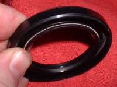 Seal with a Spring. |
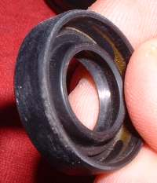 Rubber Seal. |
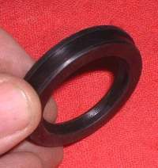 Seal with a raised edge. |
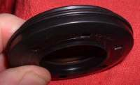 Another Seal with a raised edge. Honda XL350 |
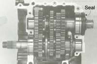 Seal with a raised edge installed. Honda XL350 |
With a few selected seals the seal has a raised edge cast into the seal. These seals are used in a crankcase that is split horizontally. These seals can be a lot harder to get out because of the lip. The official way is to take the engine out of the frame and split the crankcase. The unofficial and cheap way is to lever and rip and tear that puppy out. Then cut the edge off a new seal and drive it on with a bit of silicone sealant. Gross but a lot cheaper and it works. Most times, anyway.
Seals use springs or the natural springiness of the rubber to grip and seal the shaft. Once a seal starts to leak it can be very easy to replace it... or not! With probably 95% of seals you just lever it out. You need to be somewhat gentle so you do not scratch the shaft and reinforce the area you pry against with a piece of wood or maybe brass or steel. If you are worried about the shaft you can (Carefully!) drill a small hole in the side of the seal and screw in a little screw. One on each side of the shaft. Put two Vice Grip pliers on the screws and pull. I prefer to lever that puppy out but that is just me.
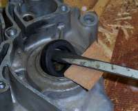 Lever that seal out. |
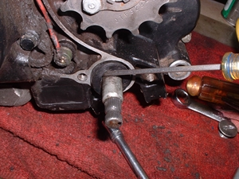 Lever that seal out. |
If you have the engine all apart you can take a screw driver, hammer and drive the seal out from behind. Tecumseh Engines sold a neat tool to remove seals. You slid it down the shaft, screwed it into the seal then turn the screw on the top end to pull the seal out. I bought one but I never got around to using it. Prying the seal out worked just fine so I never used it. Tecumseh is out of business but if you have a lathe I'll bet you could make one. Looks like it is just pipe thread cut onto a shaft with a cap welded on and a threaded hole in the cap. Trouble is you need a different one for each size seal. I think I'll just keep prying.
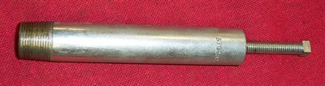
Seals fail because of wear on the seal lips or because of mechanical failure. Hard to say here if the seal started to fail, then the bearing failed, destroying the seal or if the seal was still good when the bearing failed. Either way it is new seal and bearing time. The seal starts with sharp edges and plenty of pressure on the shaft. As the shaft rotates the seal lip wears and is flattened. When there is enough wear, the tension of the seal lips on the shaft fail to grasp the shaft strongly enough to keep the oil, grease, vacuum or pressure in. The seal can look good on the outside but still be worn out on the inside. It is a good idea to replace All the oil seals when rebuilding an engine. Certainly, there is justification to do so. If the engine has run long enough to wear out the piston and rings, it has worn out the oil seals too. They just have not failed... yet!
If any debris gets wrapped around the spinning shaft it can wear out the seal AND put a groove in the steel shaft its self. I have seen this happen a lot to Outboard motor propeller shafts when fishing line gets wrapped around the shafts. If there is great mileage and/or lots of dirt it can happen to shafts on motorcycle engines too. That might be a good reason to get in there and clean your bike after a long, dirty ride. Especially the counter shaft and sprocket. Maybe even oil your chain too... naw, that's just crazy talk!
Back in the day, Auto Parts stores used to sell very thin sleeves that could be put onto shafts to cover wear grooves. Called "Shaft Repair Sleeves" these sleeves could repair shafts that would cost too much to replace or take too much labor time to replace. They work. I've used them several times in car engines but not on motorcycles. They come in many sizes.
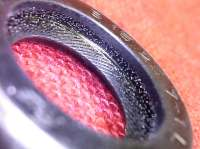 New Seal Lip |
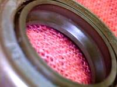 Worn Seal Lip |
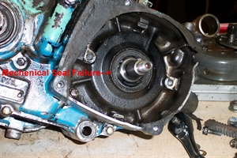 Crankshaft Seal Failure |
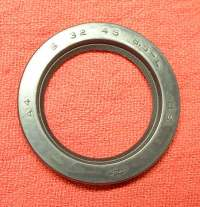
Always fit the seal with the printing or markings on it to the outside of whatever shaft you are working on. The only time you don't do this is when the shop manual, for the engine you are working on, tells you to do it a different way. Otherwise it is always printed side out.
Another type of seal you may run across in motorcycle engines is the Labyrinth seal. This seal is usually used as the center seal on two cylinder, two stroke engines like the Yamaha RD250-400cc twins. You will find it on four strokes too, such as at the end of the camshaft on the Yamaha XS650 four stroke twin. It usually wears out very slowly because nothing touches it. The clearances are very tight. It works because the gases or liquids simply cannot move through the passages of the seal quickly enough to cause a problem.
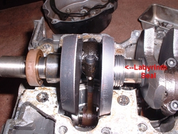 Labyrinth Seal on a two Stroke Twin |
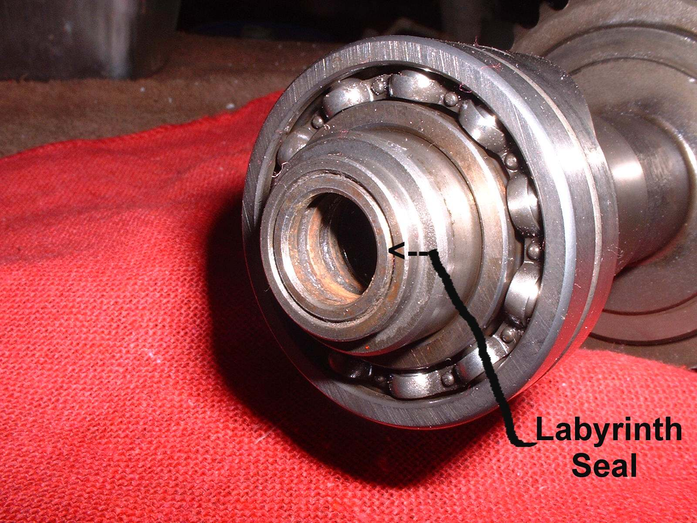 Labyrinth Seal on Yamaha 650 Twin |
After you get the seal out you need to put a new one in. If the shaft, that goes through the seal, is rough or damaged, try to smooth it out with some very fine grit sandpaper. If needed get a very thin piece of plastic sheeting. Cut it to the right size and wrap it around the shaft. Push the seal onto it and push everything down to the crankcase that houses the seal. That way a rough shaft does not damage the seal lip. Then pull the plastic sheeting out and set the seal. Sometimes, after the seal is in, the seal lips will be turned or folded back just a bit on the shaft. Take a very thin small screwdriver and pull the lips back to their proper position on the shaft.
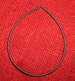 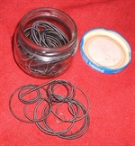
They sell sets of seal drivers but I usually use sockets installed backwards on a 3" or 6" socket extension. If the seal goes down a shaft that you can't remove you can use a deep well socket or a length of steel or plastic water pipe. The trick is to get a socket or a piece of pipe that exactly fits the outside diameter of the seal. Now you can be just a bit smaller then the diameter of the seal but not much. This is because most seals are a steel ring with rubber cast around it. The steel is strong, the rubber is weak. Any pressure you apply MUST be applied to the rubber covered steel part of the seal. This is always on the outside edge.
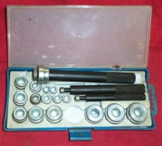 Seal Driver Set |
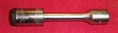 Drive Seal |
Seals are kind of an interference fit in their holes. This means they are very tight. I usually lube the outside of the seal with a bit of grease. Armor All works good too. I always put some grease (but Not Armor All) on the inside lip of the seal too. I don't normally use any kind of sealant. I only use sealant if it is called for by the shop manual or if there is some sort of imperfection in the crankcase I'm driving the seal into.
I also look at the shaft. If there is any hint of a groove or discoloration I try to set the lip of the seal in front of or behind the groove if possible. Usually there is no problem. If for some strange reason you can't get a proper seal driver in on the seal, it is possible to drive or finish driving a seal in with a small flat nose drift. You have to be very careful. Drive the seal in very slowly. Tap on one spot then go 180 degrees and tap there. Work your way around the seal and it will go in but it is much more difficult to do then using a seal driver.
Keep an eye on your seals and that Great Earthquake will not be happening. At least not to your engine. I can't say about other things in your life.

 |
 |
Copyright © 1999-2014 dansmc.com. All rights reserved.